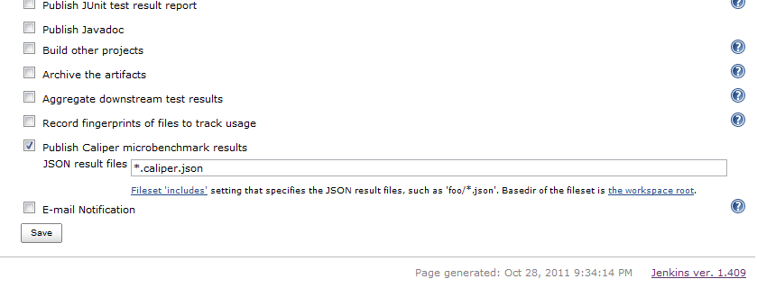

In this demo I'm playing the role of diligent java.util.concurrent.ConcurrentHashMap maintainer with some serious improvements to make :)
You'll see how I use Jenkins to discover and report on performance regressions associated with my changes.
The Benchmark
This is my Caliper benchmark to measure the cost of Map initialization, comparing mine to HashMap.
Jenkins!
Jenkins is already kindly running my CI builds to report on compile and test failures, so I'll just add a build step to run this benchmark during the build and check the "Publish Caliper microbenchmark results" box.

And then...
Build #4 succeeds, and is now my baseline.

Clicking to see detail...

All is well so far. Now I'm going to check in my super awesome change to CHM.

Oops, broke the build. Let's see the details.

I see that I've improved on the number of allocations but I've regressed on the amount of memory being allocated. Time to revert...

Another failure, why? Jenkins saw that in this build I've regressed on the number of allocations and isn't smart enough to know I'm simply trying to undo. See...

However when the next build runs there will be no change and this test will pass.


Fired
Good and bad news, Jenkins has been sending these failure emails to my team, my boss included. I've just been fired from my position as java.util.concurrent.ConcurrentHashMap maintainer on the grounds of "careless checkins" :(